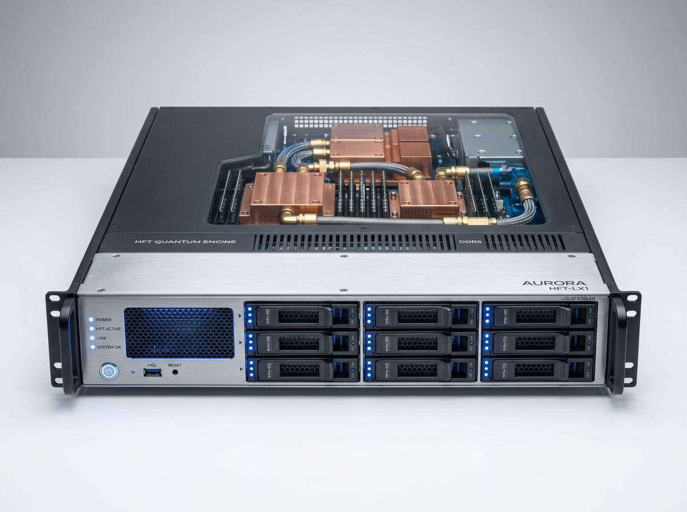

型号: TQ1810R
高频服务器
Intel
1U 旗舰超频液冷系列
TopQuant TQ1810R 1U 旗舰超频服务器
1U，含导轨 · 18核激活 4.8~5.0GHz · 最新一代闭环液冷系统
● 实机工程实物展示1U 机架式，含原厂滑轨导轨

TQ1810R✓ TopQuant 最新一代闭环液冷系统 (CPU 温度显著降低，保障持续高频可靠性)4.8GHz；4.9GHz；5.0GHz（基础频率 3.0GHz，18核激活锁频）
处理器Intel Core i9-10980XE (18核心36线程，基础频率 3.0GHz，18核全部激活)4.8GHz；4.9GHz；5.0GHz（基础频率 3.0GHz，18核激活锁频）
电源800W 冗余服务器电源 (1+1 Redundant)Solarflare X2522-25G-Plus 双端口极速低延迟网卡
硬件技术规格明细
TQ1810R
| 配置项 | 规格参数 |
|---|---|
| 机箱规格 | 1U 机架式，含原厂可调导轨 |
| 处理器 (CPU) | Intel Core i9-10980XE (18核激活，基础频率 3.0GHz) |
| 主板芯片组 | Intel X299 芯片组 |
| 超频频率 | 4.8GHz；4.9GHz；5.0GHz（18核全部激活运行） |
| 内存配置 | 64GB（4*16GB，3600MHz），最大支持扩展至 128GB |
| 系统硬盘 | 2个 480GB 企业级 SSD |
| 存储扩展 | 支持 4* 热插拔 2.5 寸驱动器位 |
| CPU 冷却 | TopQuant 最新一代闭环液冷系统 |
| 扩展插槽 | 1* PCIe 3.0 x16 Low Profile (半高)；1* PCIe 3.0 x16 Full High (全高) |
| 输入输出 (I/O) | 4* USB 3.0；1* VGA；1* COM 端口 |
| 板载网口 | 2个 1G RJ45 网口 |
| 专用交易网卡 | Solarflare X2522-25G-Plus 超低延迟网卡 |
| 远程管理 | IPMI 专用带外远程管理 |
| 电源供应 | 800W 冗余电源 |
| 售后保修 | 一年保修，7*24 小时技术支持 |
| 合规认证 | CCC 强制性产品认证 |
* 规格以原产品手册为准1U 旗舰超频液冷系列
核心特点
TQ1810R
01
高可靠性
TopQuant超频服务器部件经严格筛选，其中最新一代的液冷系统，CPU温度明显降低，大大提升了产品的可靠性和稳定性。产品经严谨的质量测试，能满足用户对稳定性、可靠性的要求。
02
整体优化
对金融交易者而言，每降低一纳秒都具有优势。TopQuant超频服务器对BIOS、Linux OS、低延迟网卡进行了匹配性调优，提高稳定性的同时提升了产品的性能，是高频、高速客户一站式优选。
03
优异的性价比
不仅为用户提供良好性能体验，也具有更高的性价比，并可按需提供定制化产品和服务。
适用场景
证券股票做市撮合
适用场景
跨期跨品种高频套利
适用场景
极速柜台穿透与DMA接入